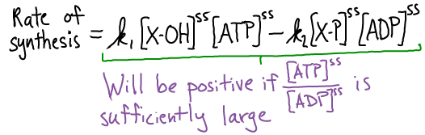

$
\newcommand{\conc}[1]{[\mathrm{#1}]}
\newcommand{\kcat}{k_{\mathrm{cat}}}
\newcommand{\kmmon}{\kon^{\mathrm{ES}}}
\newcommand{\kmmoff}{\koff^{\mathrm{ES}}}
\newcommand{\koff}{k_{\mathrm{off}}}
\newcommand{\kon}{k_{\mathrm{on}}}
\newcommand{\ss}{\mathrm{SS}}
$
Biosynthesis is driven by free energy
Chemical syntheses in the cell, such as the formation of X-Y above, typically require an input of free energy.
Free energy could be supplied directly if there were an over-abundance of reactants (compared to equilibrium) and/or a dearth of products.
More commonly, there is a complex sequence of reactions required for synthesis, and free energy drives these intermediate reactions.
Below, we see how the hydrolysis of ATP can be coupled to a series of two synthesis reactions.
Other carriers could also supply the free energy to drive synthetic reactions.
Note that if a synthetic reaction were favorable (did not require free energy), it would only be necessary for the cell to supply a catalyst.
Reaction coupling, driven by ATP
An example of the mechanism here is the synthesis of glutamine from glutamic acid, where X-OH = glutmatic acid, Y-H = NH$_3$. Below, -P = -O-PO$_3$.
The synthesis of X-Y can be coupled to ATP hydrolysis by the following two reactions
The net result of the two reactions is the synthesis of X-Y and the hydrolysis of ATP.
Graphically the process looks like this
Steady-state analysis of the coupled reactions
Will the two-step synthesis above really occur under typical cellular conditions, even if the direct synthesis ($X + Y \rightarrow XY$) is unfavorable?
We can answer this question using a steady-state analysis of the equations above in a mass action picture.
Specifically, we can calculate the rate of formation of XY (and Pi) in the second of the two reactions, which is marked with a green (*).
We use a steady-state condition on the intermediate XP:
Because the last two terms are precisely the net rate of XY and Pi synthesis - based on Eq (*) - and the four terms together sum to zero in a steady state, we can rewrite the synthesis rate to see the dependence on ATP and ATP:

So long as the ratio $\conc{ATP} / \conc{ADP}$ is sufficiently large, the rate of XY synthesis will be positive.
And because ATP is an activated carrier that ratio is large.
Bottom line: XY is synthesized at a positive rate if ATP is sufficiently activated.